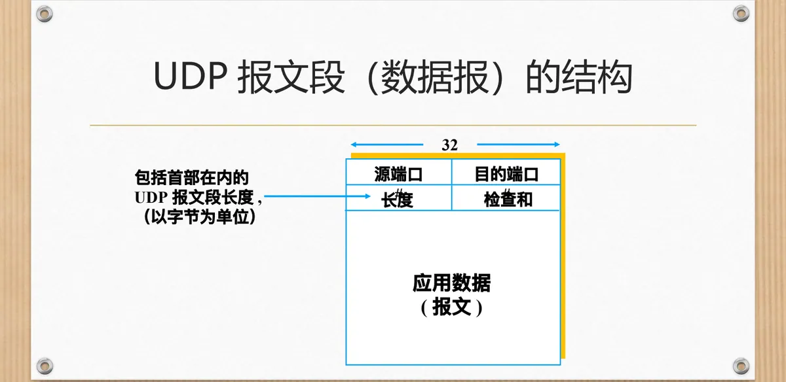
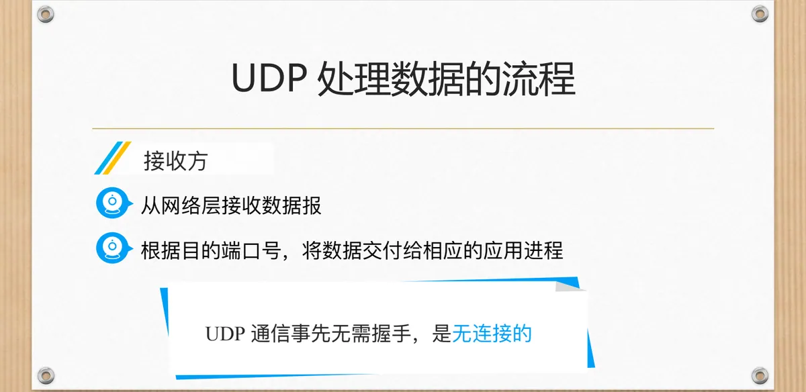
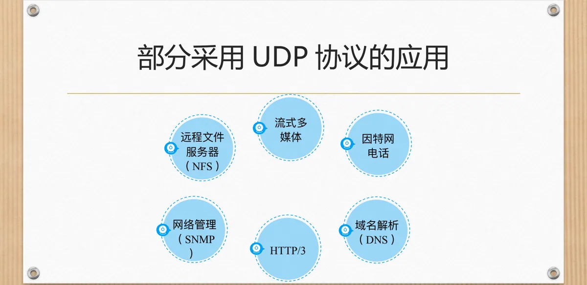
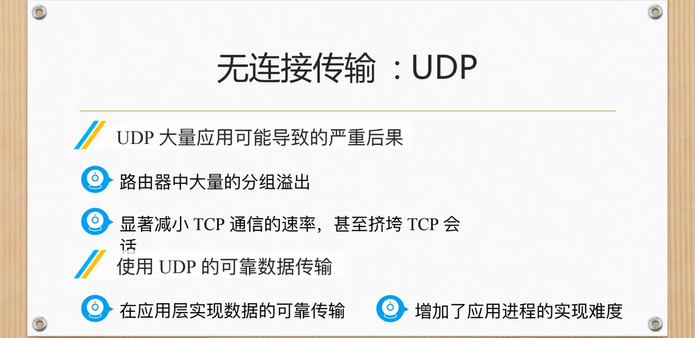

计算机通信与网络 · 第二版讲义 · 第 3 章 网络服务及应用
3.2 面向无连接的不可靠服务—UDP协议
运输层的两个主要协议取向相反：TCP 面向连接、力求可靠，UDP 面向无连接、不保证可靠。本节先看最简单的运输层协议需要哪些功能，再解剖 UDP 报文段的结构与收发流程，最后看它的优势、应用与大量使用它的后果。
1. 无连接传输：UDP 只做两件事
一个最简单的运输层协议只需两项功能：多路复用/多路分解与差错检查。前者让同一主机上多个应用进程共用网络层的主机到主机交付能力：发送时汇集各进程数据并用端口号标明来源，接收时按目的端口号分发给正确的进程（端口见 3.1 节）；后者由接收方用检查和判断数据是否出错。UDP（User Datagram Protocol，用户数据报协议）提供的正是这两项（RFC 768），此外不建立连接、不确认重传，也不管网络是否拥塞，是无连接、不可靠的运输服务；面向连接的可靠服务见 3.3 节的 TCP。
2. UDP 报文段的结构
UDP 的协议数据单元称为 UDP 报文段，也叫 UDP 数据报：固定 8 字节的首部之后，直接跟随应用数据（报文）。首部只有四个字段，各占 2 字节，图上标出的「32 位」指同一行两个字段合起来共 32 位。

源端口号标识发送方进程，接收方回送数据时要用它；目的端口号标识接收方进程，是接收方多路分解的依据。长度记包括首部在内的整个报文段长度，以字节计，减去 8 即得应用数据长度；检查和则用于差错检测。
3. UDP 处理数据的流程
发送方只有三步：从应用进程得到数据；附加上多路复用/多路分解所需的源端口号、目的端口号及差错检测信息，形成报文段（数据报）；递交给网络层，由其尽力而为地交付给接收主机。接收方则相反：从网络层接收数据报，按目的端口号把数据交付给相应的应用进程。

与 TCP 的差别是UDP 通信事先无需握手：没有建立连接的往返，也无需维护连接状态；代价是可靠性不再由运输层负责。
4. UDP 的优势
UDP 的长处可归为四条，都来自「只做最少的事」：
| 优势 | 说明 |
|---|---|
| 无需建立连接 | 建立连接会增加时延 |
| 简单 | 发送方和接收方无需维护连接状态 |
| 段首部开销小 | TCP 20 Byte vs UDP 8 Byte |
| 无拥塞控制 | UDP 可按需随时发送 |
前两条省掉的是时延与状态；第三条省掉的是带宽——TCP 首部至少 20 Byte，UDP 只要 8 Byte（见第一版讲义 5.9 TCP报文段的首部格式）。第四条最需留意：无拥塞控制使 UDP 不因网络已经拥塞而约束发送速率，想发就发，这也是第 6 小节问题的根源。
5. 部分采用 UDP 协议的应用

这些应用或对时延敏感、或能容忍偶尔丢包：因特网电话与流式多媒体宁可丢一两个分组，也不愿为等待重传而中断；域名解析只是一次简单的请求—应答，先握手未免过慢（见 3.7 节）；SNMP 要周期性地向大量设备发问，单次交互的开销越小越好；HTTP/3 也把传输建立在 UDP 之上。
6. UDP 被大量使用会带来什么
UDP 大量应用可能导致的严重后果有三条。其一，应用若需要可靠传输就只能自己实现，这增加了应用进程的实现难度。其二，UDP 不与遵守拥塞控制的 TCP 一同退让，会显著减小 TCP 通信的速率，甚至挤垮 TCP 会话——同一条链路上，TCP 分到的带宽越来越少，UDP 流却照旧发送。其三，不加节制的流量使路由器中大量的分组溢出，拥塞加剧，UDP 自己的流也同样受损。

出路是改用 TCP，或者在应用层实现数据的可靠传输：把确认、超时重传、速率调节等机制搬进应用进程（可与第一版讲义 5.7 TCP可靠传输的实现 对照）。
本节小结
- UDP 只做多路复用/多路分解与差错检查两件事（RFC 768），其余一概不做，是无连接、不可靠的运输协议；
- UDP 报文段＝8 字节首部＋应用数据（报文），首部四个字段各 2 字节：源端口号、目的端口号、长度（含首部）与检查和；
- 发送方附加端口号与差错检测信息后交网络层尽力交付，接收方按目的端口号交付给相应进程，通信事先无需握手；
- 四条优势来自「只做最少的事」：无需建立连接、简单、段首部开销小（UDP 8 Byte 对 TCP 20 Byte）、无拥塞控制；NFS、因特网电话、DNS、流式多媒体、SNMP 与 HTTP/3 因此选用 UDP，而大量使用会增大应用层可靠传输的实现难度、挤占 TCP 速率、造成分组溢出。